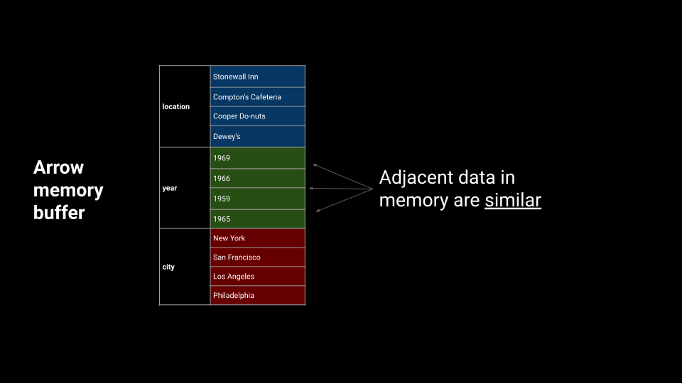

class: left, middle, theme-voltron-title-slide-light <!-- title slide style --> # The expanding Apache Arrow universe <div style="margin-bottom: -25px;"></div> ## Standardizing and accelerating<br> tabular data access and interchange .center[.boldface[Joris Van den Bossche (Voltron Data)]] <!-- author, one line --> .center[.midi[PyData Paris, 25 September 2024]] <!-- general info, one line --> <div style="margin-bottom: 40px;"></div> .center[https://jorisvandenbossche.github.io/talks/] <!-- font-size classes (relative to normal 100%) .larger = 200% .large = 130% .midi = 85% .small = 70% .xsmall = 60% .tiny = 50% --> --- ## About me **Joris Van den Bossche** <img style="width: 200px; float: left; margin-right: 50px;" src="img/joris.png" /> - Background: PhD bio-science engineer, air quality research - Open source enthusiast: core developer of pandas, GeoPandas, Shapely, Apache Arrow (pyarrow), ... - Currently working part-time at Voltron Data on Apache Arrow <div style="margin-bottom:30px; clear: both"></div> .center[ .affiliations[   ] ] .center[ <a href="https://twitter.com/jorisvdbossche" style="color: var(--primary)"><img src="img/icon_twitter.svg" alt="Twitter logo" class="icon"> twitter.com/jorisvdbossche</a> <a href="https://github.com/jorisvandenbossche" style="color: var(--primary)"><img src="img/icon_github.svg" alt="Github logo" class="icon"> github.com/jorisvandenbossche</a> ] .abs-layout.top-1.left-50[  ] --- class: theme-title-slide-dark, middle, left # Open standards ??? open standards important for interoperability eg html slides -> open standard markup language Arrow -> about in-memory data --- ## Arrays: buffer protocol .left-column[  ] .right-column[  Single contiguous buffer in memory Buffer protocol: share the array as pointer to start of buffer + type, shape and strides ] <!-- .abs-layout.bottom-1.left-70.width-40[  ] --> --- ## Tabular data representation  -- .accent[.fat[Row-wise]] <div style="margin-bottom:-20px"></div>  -- .accent[.fat[Columnar]] <div style="margin-bottom:-20px"></div>  --- class: theme-title-slide-dark, middle, left # Apache Arrow:<br>standardized in-memory format for structured tabular data --- ## Arrow Columnar Format Defines the memory layout for various types, nested data, missing values, etc .center[  ] <!-- --- class: theme-green-minimal ## What is Apache Arrow? > A specification defining a common, language-agnostic <br> > in-memory representation for columnar data <br> > \+ <br> > A multi-language toolbox for accelerated data interchange <br> > and in-memory processing .abs-layout.bottom-1.left-70.width-40[  ] --> <!-- ## What is Apache Arrow? --> <!-- - Toolbox for in-memory analytics --> <!-- - Toolbox for larger than memory data --> <!-- - Toolbox for connecting languages and hardware --> <!-- - Efficient, performant, open source --> <!-- - Details at [arrow.apache.org](https://arrow.apache.org) --> <!----------------------------------------------------------------------------> --- class: theme-green-minimal ## Accelerating data interchange <p style="margin-bottom: 20px;"><img src="img/data-interchange-1.svg" width="70%"></p> <p style="margin-top: 20px;"><span class="small">Image by Danielle Navarro</span></p> <!----------------------------- SLIDE BREAK -----------------------------> --- class: theme-green-minimal ## Accelerating data interchange <p style="margin-bottom: 20px;"><img src="img/data-interchange-2.svg" width="70%"></p> <p style="margin-top: 20px;"><span class="small">Image by Danielle Navarro</span></p> <!----------------------------- SLIDE BREAK -----------------------------> --- class: theme-light-logo ## Arrow has become the de-facto standard Old figure from the start of the project at 2017 (vision), now a reality <div style="margin-bottom:70px;"></div> .center[   ] ??? used by all those libraries -> but also for you as user if you have your data in Arrow format, you can easily connect with various systems and you can build a modular pipeline you can easily use different tools and languages --- class: theme-green-minimal ## Efficient in-memory processing <p style="margin-bottom: 20px;"><img src="img/simd-1.svg" width="70%"></p> <p style="margin-top: 20px;"><span class="small">Image by Danielle Navarro</span></p> <!-- class: theme-green-minimal ## Efficient in-memory processing <p style="margin-bottom: 20px;"><img src="img/simd-2.svg" width="70%"></p> <p style="margin-top: 20px;"><span class="small">Image by Danielle Navarro</span></p> class: theme-green-minimal ## Efficient in-memory processing <p style="margin-bottom: 20px;"></p> <p style="margin-top: 20px;"><span class="small">Image by Danielle Navarro</span></p> --> --- class: theme-green-minimal ## Efficient in-memory processing <p style="margin-bottom: 20px;"><img src="img/simd-4.svg" width="70%"></p> <p style="margin-top: 20px;"><span class="small">Image by Danielle Navarro</span></p> --- ## Arrow(-compatible) compute engines .abs-layout.top-20.left-15.width-25[  ] .abs-layout.top-20.left-60.width-20[  ] .abs-layout.top-48.left-15.width-30[  ] .abs-layout.top-52.left-55.width-30[  ] .abs-layout.top-72.left-35.width-30[  ] ??? Can easily be integrated into your workflows because of Arrow compatibility whether its the arrow projects itself or those external ones --- ## Apache Arrow project .accent[.fat[Open standard]] * A specification defining a common, language-agnostic in-memory representation for columnar data * Specifications on top of the columnar format to share data within and between processes .accent[.fat[Implementations]] * A set of implementations with assorted components and toolboxes ("batteries included") * Implementations in C++ (Python/R/Ruby), Java, Rust, Go, JavaScript, C#, Matlab, Julia, C, … .abs-layout.top-0.left-75[  ] .center[ https://arrow.apache.org / https://github.com/apache/arrow ] --- ## Ecosystem of specifications / implementations .center[  ] --- class: theme-title-slide-dark, middle, left # New(ish) developments in the Arrow project --- ## New developments in Apache Arrow .left-column[ .accent[.fat[Columnar format]] * New data types: run-end encoding, string view, list view * Canonical extension types: fixed and variable shaped tensor, json, uuid, bool8 .accent[.fat[Arrow C Data Interface]] * Device interface * Python: Arrow PyCapsule interface ] .right-column[ .accent[.fat[IPC format]] * Dissociated transport .accent[.fat[Arrow Flight]] * Flight SQL marked as stable .accent[.fat[Arrow Database Connectivity (ADBC)]] * 1.0 release early 2023 (API) * Expanding set of drivers and client APIs ] -- New implementations: nanoarrow<br> Outside of Apache Arrow project: sparrow (C++20), flechette (js), arro3 (Python bindings to arrow-rs), ... ??? IPC Dissociated transport (header and data body separately, allowing data to use non-CPU memory, shared memory, ..) * Expanding set of drivers (Google BigQuery, Snowflake, Flight SQL, ...) and client APIs (Python, Go, Java, R, ...) --- class: theme-green-minimal ## nanoarrow **Arrow C++** * Produce, convert and transform Arrow arrays (with lots of features) * (depending on build options) ~50 MB static libraries **nanoarrow** (https://github.com/apache/arrow-nanoarrow) * Just produce and convert from/to C types * Tiny size, fast compilation * Copy/paste two files into a project * Helpers for Arrow C Data & Arrow C Stream interfaces -- * Goal: lower the barrier to producing/consuming Arrays in Arrow format More at https://arrow.apache.org/blog/2023/03/07/nanoarrow-0.1.0-release/ --- class: theme-title-slide-dark, middle, left # Arrow Columnar format: new data types --- ## Traditional variable-size binary (string) layout .center[  ] --- ## New variable-size binary (string) _view_ layout .center[  ] -- - Fixed-width "views" buffer with length, inline prefix and buffer index and offset --- ## New variable-size binary (string) _view_ layout .center[  ] --- ## New variable-size binary (string) _view_ layout - "German style" strings, adapted from TU Munich's UmbraDB - Used in DuckDB, Velox, and others - Added to the Arrow Columnar Format in 2023, picked up by polars and datafusion -- - Optimization possibilities: - Less copying of the string data - Faster comparisons using the inline prefix - Reusing repeated string values <div style="margin-bottom:50px"></div> Polars: Why we have rewritten the string data type (https://pola.rs/posts/polars-string-type/)<br> DataFusion: Using StringView / German Style Strings to Make Queries Faster (https://www.influxdata.com/blog/faster-queries-with-stringview-part-one-influxdb/) --- ## Extension types > Annotate existing data type with custom name and metadata -- .accent[.fat[Canonical extension types]] .left-column[ - Fixed shape tensor (_fixed size list_) - Variable shape tensor (_struct of list_) - JSON (_string_) ] .right-column[ - UUID (_fixed size binary of 16 bytes_) - Opaque - 8-bit Boolean (_int8_) ] https://arrow.apache.org/docs/format/CanonicalExtensions.html -- .accent[.fat[Community extension types]] - GeoArrow: standardizing how to represent geospatial vector data (simple features) in Arrow (https://github.com/geoarrow/geoarrow) --- class: theme-title-slide-dark, middle, left # Arrow C Data interface --- ## Example: polars to pyarrow ```python >>> import polars as pl >>> df_polars = pl.DataFrame({"a": [1, 2], "b": [0.1, 0.2]}) >>> df_polars.to_arrow() pyarrow.Table a: int64 b: double ---- a: [[1,2]] b: [[0.1,0.2]] ``` --- count: false ## Example: polars to datafusion ```python >>> import polars as pl >>> df_polars = pl.DataFrame({"a": [1, 2], "b": [0.1, 0.2]}) >>> df_polars.to_arrow() # convert polars to datafusion >>> from datafusion import SessionContext >>> ctx = SessionContext() >>> df_datafusion = ctx.from_arrow(df_polars.to_arrow()) >>> df_datafusion DataFrame() +---+-----+ | a | b | +---+-----+ | 1 | 0.1 | | 2 | 0.2 | +---+-----+ ``` --- ## Example: polars to datafusion ```python # convert polars to datafusion >>> from datafusion import SessionContext >>> ctx = SessionContext() >>> df_datafusion = ctx.from_arrow(df_polars.to_arrow()) # and convert back to polars >>> pl.DataFrame(df_datafusion.to_arrow_table()) shape: (2, 2) ┌─────┬─────┐ │ a ┆ b │ │ --- ┆ --- │ │ i64 ┆ f64 │ ╞═════╪═════╡ │ 1 ┆ 0.1 │ │ 2 ┆ 0.2 │ └─────┴─────┘ ``` -- .abs-layout.top-60.left-40.width-50[ .accent[ * Fast, zero-copy conversion * Rust objects and C++ object pointing to the same data ]] ??? zero copy conversion, actually sharing the data (both the Rust object and the C++ object point to the same data in memory) That might sound trivial, but this is only possible because of the standardization of the Arrow memory format and C data interface Because this is done without that those two libraries know about each other (at a low level, the method of course imports pyarrow to create the object, but it does not need to bind against the low level Arrow C++ APIs) --- class: theme-green-minimal ## How does this work? .accent[.fat[Arrow C Data Interface]] * Zero-copy data sharing between independent runtimes within the same process (inspired by the Python buffer protocol) * Small set of ABI-stable C definitions * Allows to integrate with the Arrow *format* without necessarily requiring Arrow *software* (either at compile-time or runtime) https://arrow.apache.org/docs/dev/format/CDataInterface.html -- Used by duckdb, Polars, arrow-rs/datafusion, cudf, GDAL, reticulate and rpy2 (Python<->R), ... --- class: theme-green-minimal ## Arrow C Data Interface ```c struct ArrowArray { // Array data description int64_t length; int64_t null_count; int64_t offset; int64_t n_buffers; int64_t n_children; * const void** buffers; struct ArrowArray** children; struct ArrowArray* dictionary; // Release callback void (*release)(struct ArrowArray*); // Opaque producer-specific data void* private_data; }; ``` <div style="margin-bottom:-20px"></div> .right[ \+ definitions for `ArrowSchema` and `ArrowArrayStream` ] --- ## How does this work in Python? ```python >>> df_polars = pl.DataFrame({"a": [1, 2], "b": [0.1, 0.2]}) # convert polars to datafusion >>> ctx = datafusion.SessionContext() >>> df_datafusion = ctx.from_arrow(df_polars`.to_arrow()`) # and convert back to polars >>> pl.DataFrame(df_datafusion`.to_arrow_table()`) ``` -- .abs-layout.top-60.left-30.width-70[ .accent[ -> Connecting two Rust libraries through C++ (pyarrow)<br> -> Relies on knowing which method to call (`to_arrow()` / `to_arrow_table()`) ]] ??? Problems: 1) we are connecting two rust Arrow implementations (datafusion cusing the arrow-rs crate, polars having internal implementation of Arrow format), but to share it we have to pass it through pyarrow, i.e. C++ implementation -> not necessary! 2) it relies on knowing that polars has to_pyarrow method, and datafusion can accept pyarrow data, but not all libraries are using the same name --- ## How does this work in Python? ```python >>> df_polars = pl.DataFrame({"a": [1, 2], "b": [0.1, 0.2]}) # convert polars to datafusion >>> ctx = datafusion.SessionContext() >>> df_datafusion = ctx.from_arrow(df_polars) # and convert back to polars >>> pl.DataFrame(df_datafusion) ``` -- .abs-layout.top-57.left-7.width-80[ .accent[.fat[The Arrow PyCapsule Interface]] - Passing the C struct pointer through Python as a capsule object - Standardized "dunder" methods to interchange those capsules -> to recognize Arrow-compatible data structures https://arrow.apache.org/docs/format/CDataInterface/PyCapsuleInterface.html ] --- ## Arrow PyCapsule Interface ```python class ArrowStreamExportable: def __arrow_c_stream__( self, requested_schema=None ) -> PyCapsule: ... ``` .abs-layout.top-57.left-7.width-80[ .accent[.fat[The Arrow PyCapsule Interface]] - Passing the C struct pointer through Python as a capsule object - Standardized "dunder" methods to interchange those capsules -> to recognize Arrow-compatible data structures https://arrow.apache.org/docs/format/CDataInterface/PyCapsuleInterface.html ] --- ## Arrow PyCapsule Interface adoption ```python import pandas as pd df = pd.DataFrame({"a": [1, 2], "b": [0.1, 0.2]}) import duckdb con = duckdb.connect() result_duckdb = con.query("SELECT * FROM df") import polars as pl df_polars = pl.DataFrame(result_duckdb) import pyarrow as pa table = pa.table(df_polars) import datafusion ctx = datafusion.SessionContext() df_datafusion = ctx.from_arrow(table) df_roundtripped = pd.DataFrame.from_arrow(df_datafusion) ``` -- .abs-layout.top-60.left-60.width-30[ .accent[ and narwhals, arro3, ibis, nanoarrow, quak, ... ]] --- ## Arrow C Device Interface The Arrow C Data Interface makes the assumption that all data buffers provided are CPU buffers -- * Small extension on top of the Arrow C Data Interface supporting non-CPU devices * Allows specifying the device type and handling of synchronization * Added in Arrow 13.0 and available in Arrow C++; initial usage in cudf https://arrow.apache.org/docs/dev/format/CDeviceDataInterface.html --- class: theme-title-slide-dark, middle, left # Arrow Database Connectivity (ADBC) --- class: theme-light-logo ## Using JDBC / ODBC (or Python DBAPI 2.0) <div style="margin-bottom: -20px;"></div> .center[  ] .smaller[ .left-column[ 1. The application submits a SQL query via the JDBC/ODBC API. 2. The query is passed on to the driver. 3. The driver translates the query to a database-specific protocol and sends it to the database. ] .right-column[ <ol start="4"> <li>The database executes the query and returns the result set in a database-specific format.</li> <li>The driver translates the result into the format required by the JDBC/ODBC API.</li> <li>The application iterates over the result rows using the JDBC/ODBC API.</li> </ol> ] ] -- .abs-layout.top-85.left-7.width-80[ JDBC/ODBC are everywhere, but have conversion costs (assume row-oriented data) ] ??? Most Common Interaction with Databases --- class: theme-light-logo ## Using ADBC .center[  ] .smaller[ .left-column[ 1. The application submits a SQL query via the ADBC API. 2. The query is passed on to the ADBC driver. 3. The driver translates the query to a database-specific protocol and sends the query to the database. ] .right-column[ <ol start="4"> <li>The database executes the query and returns the result set in a database-specific format, which is ideally Arrow data.</li> <li>If needed: the driver translates the result into Arrow data.</li> <li>The application iterates over batches of Arrow data.</li> </ol> ] ] ??? ADBC is an Arrow-based, vendor-neutral API for interacting with databases. Just like JDBC/ODBC, underneath the ADBC API are drivers that translate API for specific databases A driver for an arrow-native database just passes Arrow data through without conversion A driver for a non-Arrow-native database must convert the data to Arrow. This saves the application from having to do that, and the driver can optimize the conversion for its database The application deals only with one API, and only works with Arrow data --- class: theme-light-logo ## Arrow Database Connectivity (ADBC) A single API for getting Apache Arrow data in and out of different databases. * Arrow-native (get data in Arrow format, using the C Data Interface) * Backend-agnostic (ADBC drivers can implement the API using any underlying protocol) -- -> ADBC defines a common client API that can be implemented by different drivers (SQLite, PostgreSQL, Snowflake, Google BigQuery, DuckDB, Flight SQL, JDBC adapter, ...) -> ADBC provides libraries (driver managers) to interact with those drivers in various languages (C/C++, C#, Go, Java, Python, R, Ruby, Rust, ...) -- ADBC doesn't intend to replace JDBC or ODBC for general use, just for applications that want bulk columnar data access. https://arrow.apache.org/adbc/ https://arrow.apache.org/blog/2023/01/05/introducing-arrow-adbc/ ??? A columnar, vendor-neutral, minimal-overhead alternative to JDBC/ODBC for analytical applications ADBC allows native database connectivity using Arrow columnar data --- class: theme-light-logo ## ADBC Python drivers .large-code[ ``` pip install adbc-driver-sqlite adbc-driver-postgresql adbc-driver-snowflake ``` ] Provides a DBAPI 2.0 like interface (but using `fetch_arrow_table` instead of `fetchone`/`fetchall`): ```python import adbc_driver_postgresql.dbapi uri = "postgresql://localhost:5432/postgres?user=postgres&password=password" with adbc_driver_postgresql.dbapi.connect(uri) as conn: with conn.cursor() as cur: cur.execute("SELECT * FROM customer") table = cur.`fetch_arrow_table()` # Process the results ``` -- Currently Python-installable drivers for SQLite, PostgreSQL, Snowflake, Flight SQL --- class: theme-light-logo ## ADBC Python drivers Avoiding the overhead of row-by-row conversion to DataFrame: ```python df = pd.DataFrame({"ints": np.arange(1_000_000), "floats": np.random.randn(1_000_000)}) df.to_sql("test_table", "sqlite:///db.sqlite", index=False) ``` ```python %timeit pd.read_sql("SELECT * FROM test_table;", "sqlite:///db.sqlite") # 1.87 s ± 17 ms per loop (mean ± std. dev. of 7 runs, 1 loop each) ``` -- ```python %%timeit import adbc_driver_sqlite.dbapi with adbc_driver_sqlite.dbapi.connect("file:db.sqlite") as conn: with conn.cursor() as cur: cur.execute("SELECT * FROM test_table") table = cur.fetch_arrow_table() # 150 ms ± 2.15 ms per loop (mean ± std. dev. of 7 runs, 10 loops each) ``` --- class: theme-light-logo count: false ## ADBC Python drivers Avoiding the overhead of row-by-row conversion to DataFrame: ```python df = pd.DataFrame({"ints": np.arange(1_000_000), "floats": np.random.randn(1_000_000)}) df.to_sql("test_table", "sqlite:///db.sqlite", index=False) ``` ```python %timeit pd.read_sql("SELECT * FROM test_table;", "sqlite:///db.sqlite") # 1.87 s ± 17 ms per loop (mean ± std. dev. of 7 runs, 1 loop each) ``` ```python %%timeit import adbc_driver_sqlite.dbapi with adbc_driver_sqlite.dbapi.connect("file:db.sqlite") as conn: pd.read_sql("SELECT * FROM test_table;", conn) # 150 ms ± 2.15 ms per loop (mean ± std. dev. of 7 runs, 10 loops each) ``` --- class: left, middle, theme-voltron-title-slide-light ## Thanks for listening! Questions? Those slides: - https://github.com/jorisvandenbossche/talks/ - http://jorisvandenbossche.github.io/talks/2024_PyDataParis_Arrow .center[ <a href="https://fosstodon.org/@jorisvandenbossche" style="color: var(--text-white)"><img src="img/mastodon-svgrepo-com.svg" width="28px" alt="Twitter logo" class="icon"> @jorisvandenbossche@fosstodon.org</a><br> <a href="https://github.com/jorisvandenbossche" style="color: var(--text-white)"><img src="img/icon_github.svg" alt="Github logo" class="icon"> github.com/jorisvandenbossche</a> ] --- class: theme-green-minimal count: false ## The Arrow Columnar Format * A specification for in-memory representation of columnar data * Everything in Arrow is based on the Columnar Format * Primitive types: * Integers, floats, booleans, decimals * Binary, utf-8 strings * Dates, times, timestamps, durations, intervals * Composite (nested) types: * List, Struct, Map * Union (dense or sparse) * Optional dictionary or run-end encoding * Nulls encoded as a separate validity bitmap * Extension types: an escape hatch for application-specific data (e.g. Pandas extension types, tensor types, ...) --- class: theme-light-logo count: false ## Arrow C++ / PyArrow Package with low-level building blocks used throughout the PyData ecosystem * Core implementation: * In-memory data objects (+ conversion to/from Python, numpy, pandas) * IO facilities, IPC serialization, Flight RPC bindings * Basic GPU support for CUDA-enabled devices * Data access services: * Filesystem implementation (local, S3, GCS, HDFS) * File formats (Parquet, Orc, CSV, ND-JSON) * Dataset interface (partitioned, predicate pushdown) * Compute: * Set of built-in compute kernels * Acero streaming execution engine (grouped aggregations, joins, ..) * Substrait integration --- class: theme-light-logo count: false ## Arrow and Substrait .pull-left[ .center[  **Apache Arrow**<br> a universal standard for representing tabular data ] ] .pull-right[ .center[  **Substrait**<br> a universal standard for representing relational operations ] ] <div style="margin-bottom: 100px;"></div> .center[ https://substrait.io/ ] ??? These two standards are important for us because they will enable modularity and composability in the data analytics ecosystem. These two standards will enable users to pick a language, pick a query engine, pick a storage system and have them all work well together with excellent performance. We want users to be able to mix and match, and trust that their workloads are portable. That's the antidote to vendor lock-in, data silos, and technology silos. --- class: theme-light-logo count: false ## Arrow and Substrait .center[  ]